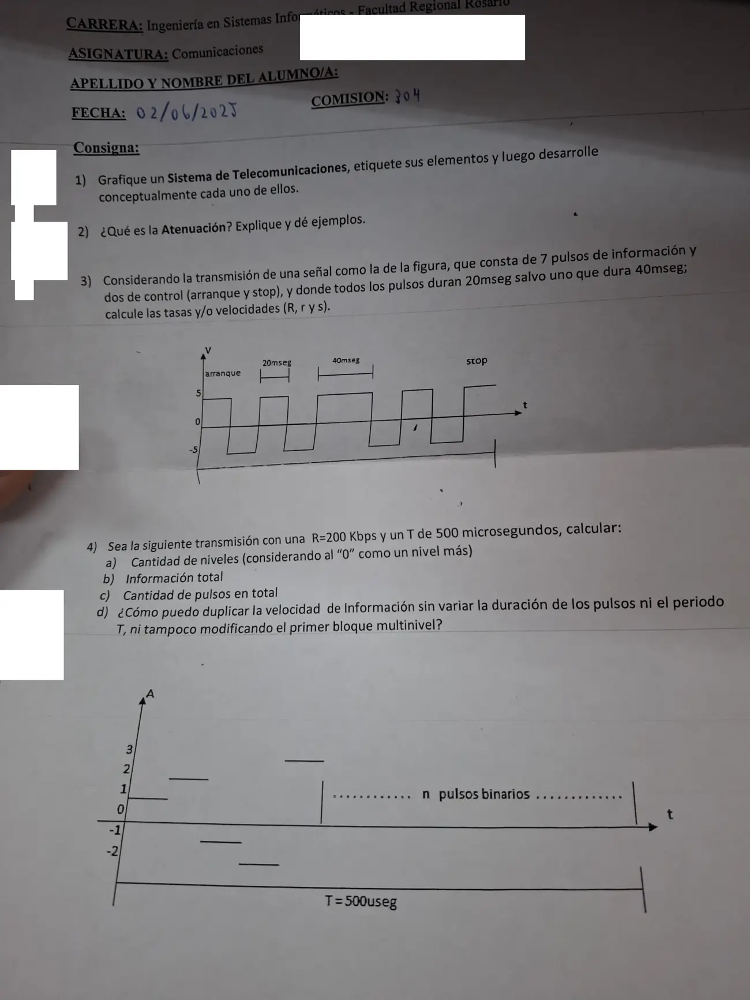

1° parcial 2025, práctica
1° parcial, 2025
Enunciado


Propuesta de respuesta
Respuesta no verificada. La propuso Luta Studios con inteligencia artificial y ningún docente la revisó. Puede tener errores.
1. El sistema básico tiene siete bloques. El mensaje sale de la fuente, se vuelve señal eléctrica, se adapta al canal, viaja perturbado y se recupera del otro lado. Tocá el dibujo para verlo en pantalla completa.
| Elemento | Qué hace |
|---|---|
| Fuente | Genera la información, no necesariamente como impulsos eléctricos |
| Transductor de entrada | Convierte el mensaje en señal eléctrica, porque Tx y Rx trabajan con señales eléctricas |
| Transmisor (Tx) | Adapta la señal al canal. Tiene tres etapas, filtrado, procesamiento y amplificación |
| Canal | Es el enlace entre emisor y receptor. Acá aparecen distorsión, interferencia y ruido |
| Receptor (Rx) | Hace el trabajo inverso y además tiene que lidiar con las perturbaciones |
| Transductor de salida | Pasa la señal eléctrica a algo que el destino entienda |
| Destino | Recibe la información |
La información es todo lo que elimina una incertidumbre y ayuda a tomar una decisión. El transmisor modula por tres razones, para adaptar la señal al medio, para combatir interferencia y ruido, y para multiplexar varias señales en un mismo canal. Distorsión e interferencia se pueden eliminar en teoría. El ruido no, solo se mejora la relación señal a ruido.
2. La atenuación es la relación entre la magnitud de entrada de un sistema y la salida que ella provoca, es decir, la inversa de la ganancia. En sistemas pasivos, como cables, es la expresión normal de la transferencia. En un medio de transmisión es la pérdida de potencia a lo largo del medio.
Como los niveles cubren un rango enorme, se expresa en decibeles. Así la atenuación total de varias etapas sale sumando las parciales.
La segunda vale si la impedancia es la misma en los dos puntos. No hay que confundirla con el ruido. El ruido se suma a la señal desde afuera, y la atenuación la pone el propio medio.
Ejemplos del material. El apunte define la Unidad de Transmisión con una atenuación de 10 veces sobre 10 millas de cable telefónico. En el par trenzado la atenuación depende fuertemente de la frecuencia, y el segmento se limita a 100 metros. En la fibra es baja, y los repetidores van cada 50 km aproximadamente, contra casi 5 km en cobre. En microondas, desde unos 4 GHz la lluvia absorbe la señal.
3. Hay 9 pulsos, 7 de información y 2 de control. Ocho duran 20 ms y uno 40 ms. Arranque y stop tienen valor fijo y no informan, pero cuentan para y para .
Los pulsos de información van a +5 o a −5 V, dos niveles, y cada uno lleva bit.
es la mayor porque imagina todos los pulsos tan cortos como el más corto. es la menor porque solo cuenta lo que informa.
4a. En el eje están −2, −1, 0, 1, 2 y 3. Con el 0 como un nivel más, el primer bloque tiene niveles y 5 pulsos, en 1, 2, −1, −2 y 3. El segundo bloque es binario, .
4b. bits.
4c. Las informaciones de los dos bloques se suman.
Son pulsos binarios y en total pulsos. Con 87, bits, los 100 del enunciado redondeados.
4d. Sin tocar la duración de los pulsos, el período ni el primer bloque, lo único que queda es aumentar los niveles del bloque binario. Se duplica y se despeja .
Se redondea para arriba, a 5 niveles. Con 4 no alcanza, porque da bits. Con 5 da bits, o sea Kbps, por lo menos el doble.
Respuesta no verificada. Puede tener errores.
Se armó con Resumen del 1° parcial, secciones Sistema de telecomunicaciones, Ganancia y atenuación, Transmisión multinivel (fórmulas, R, r y s, varios bloques y cómo se duplica la velocidad) y Medios de transmisión, con los ejercicios 11 y 14 de «2 - Transmisión Multinivel (Resuelto)».
Quedó en duda: Tomé los pulsos de información como binarios, a +5 o a −5 V, como en el ejemplo del apunte de 5 dígitos de información y 7 en total. Si se contara el 0 del eje como un tercer nivel, bits y bps. El bloque binario necesita pulsos para dar justo 100 bits. Usé 87, el entero más cercano. Con 88 la información pasaría de 100 bits. En la pregunta de duplicar elegí el bloque binario porque la consigna prohíbe tocar el primero.
¿Cómo te fue?
Marcá cada tema del examen.
- sistemaSistema de telecomunicaciones, en 1° parcial
- atenuacionGanancia, atenuación y decibeles, en 1° parcial
- multinivelTransmisión multinivel, en 1° parcial